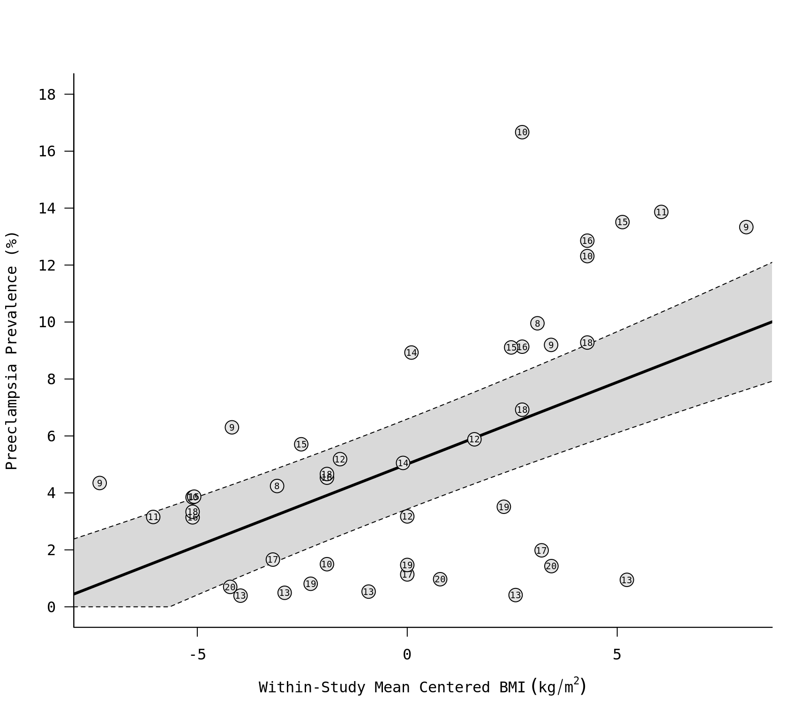

dat.obrien2003.RdResults from 13 studies on the relationship between maternal body mass index (BMI) and the risk of preeclampsia.
dat.obrien2003
The data frame contains the following columns:
| study | numeric | study id |
| author | character | (first) author of the study |
| year | numeric | publication year |
| ref | numeric | reference number |
| ch | character | exclusion due to chronic hypertension (yes/no) |
| dm | character | exclusion due to diabetes mellitus (yes/no) |
| mg | character | exclusion due to multiple gestation (yes/no) |
| bmi.lb | numeric | lower bound of the BMI interval |
| bmi.ub | numeric | upper bound of the BMI interval |
| bmi | numeric | midpoint of the BMI interval |
| cases | numeric | number of preeclampsia cases in the BMI group |
| total | numeric | number of individuals in the BMI group |
The dataset includes the results from 13 studies examining the relationship between maternal body mass index (BMI) and the risk of preeclampsia. For each study, results are given in terms of the number of preeclampsia cases within two or more groups defined by the lower and upper BMI bounds as shown in the dataset (NA means that the interval is either open to the left or right). The bmi variable is the interval midpoint as defined by O'Brien et al. (2003).
O'Brien, T. E., Ray, J. G., & Chan, W.-S. (2003). Maternal body mass index and the risk of preeclampsia: A systematic overview. Epidemiology, 14(3), 368--374. https://doi.org/10.1097/00001648-200305000-00020
### copy data into 'dat' dat <- dat.obrien2003 dat#> study author year ref ch dm mg grp bmi.lb bmi.ub bmi cases #> 1 1 Edwards 1996 8 no no yes 1 19.8 26.0 22.90 28 #> 2 1 Edwards 1996 8 no no yes 2 29.0 NA 29.10 68 #> 3 2 Sibai 1997 9 yes yes yes 1 NA 19.8 19.70 18 #> 4 2 Sibai 1997 9 yes yes yes 2 19.8 25.9 22.85 142 #> 5 2 Sibai 1997 9 yes yes yes 3 26.0 34.9 30.45 118 #> 6 2 Sibai 1997 9 yes yes yes 4 35.0 NA 35.10 48 #> 7 3 Ogunyemi 1998 10 no no yes 1 NA 19.8 19.70 3 #> 8 3 Ogunyemi 1998 10 no no yes 2 19.8 26.0 22.90 5 #> 9 3 Ogunyemi 1998 10 no no yes 3 26.1 29.0 27.55 13 #> 10 3 Ogunyemi 1998 10 no no yes 4 29.0 NA 29.10 25 #> 11 4 Ros 1998 16 no no no 1 NA 19.8 19.70 11 #> 12 4 Ros 1998 16 no no no 2 19.8 26.0 22.90 78 #> 13 4 Ros 1998 16 no no no 3 26.1 29.0 27.55 19 #> 14 4 Ros 1998 16 no no no 4 29.0 NA 29.10 18 #> 15 5 Bianco 1998 11 no no yes 1 19.0 27.0 23.00 357 #> 16 5 Bianco 1998 11 no no yes 2 35.0 NA 35.10 85 #> 17 6 Knuist 1998 17 yes yes yes 1 NA 19.8 19.70 7 #> 18 6 Knuist 1998 17 yes yes yes 2 19.8 26.0 22.90 16 #> 19 6 Knuist 1998 17 yes yes yes 3 26.0 NA 26.10 5 #> 20 7 Thadhani 1999 13 yes no no 1 NA 21.0 20.90 22 #> 21 7 Thadhani 1999 13 yes no no 2 21.0 22.9 21.95 22 #> 22 7 Thadhani 1999 13 yes no no 3 23.0 24.9 23.95 17 #> 23 7 Thadhani 1999 13 yes no no 4 25.0 29.9 27.45 12 #> 24 7 Thadhani 1999 13 yes no no 5 30.0 NA 30.10 10 #> 25 8 Bowers 1999 12 yes yes yes 1 NA 26.0 25.90 7 #> 26 8 Bowers 1999 12 yes yes yes 2 26.0 29.0 27.50 2 #> 27 8 Bowers 1999 12 yes yes yes 3 29.0 NA 29.10 5 #> 28 9 Lee 2000 19 yes yes no 1 NA 19.8 19.70 80 #> 29 9 Lee 2000 19 yes yes no 2 19.8 24.2 22.00 261 #> 30 9 Lee 2000 19 yes yes no 3 24.2 NA 24.30 74 #> 31 10 Conde-Agudelo 2000 18 no no no 1 NA 19.8 19.70 2901 #> 32 10 Conde-Agudelo 2000 18 no no no 2 19.8 26.0 22.90 16885 #> 33 10 Conde-Agudelo 2000 18 no no no 3 26.1 29.0 27.55 4264 #> 34 10 Conde-Agudelo 2000 18 no no no 4 29.0 NA 29.10 4749 #> 35 11 Steinfeld 2000 14 no no yes 1 NA 29.0 28.90 114 #> 36 11 Steinfeld 2000 14 no no yes 2 29.0 NA 29.10 15 #> 37 12 Sebire 2001 20 no no yes 1 20.0 24.9 22.45 1238 #> 38 12 Sebire 2001 20 no no yes 2 25.0 29.9 27.45 766 #> 39 12 Sebire 2001 20 no no yes 3 30.0 NA 30.10 447 #> 40 13 Baeten 2001 15 no no yes 1 NA 20.0 19.90 731 #> 41 13 Baeten 2001 15 no no yes 2 20.0 24.9 22.45 2866 #> 42 13 Baeten 2001 15 no no yes 3 25.0 29.9 27.45 1594 #> 43 13 Baeten 2001 15 no no yes 4 30.0 NA 30.10 1321 #> total #> 1 660 #> 2 683 #> 3 414 #> 4 2253 #> 5 1283 #> 6 360 #> 7 78 #> 8 334 #> 9 78 #> 10 203 #> 11 350 #> 12 1720 #> 13 208 #> 14 140 #> 15 11313 #> 16 613 #> 17 422 #> 18 1406 #> 19 252 #> 20 5605 #> 21 4463 #> 22 3182 #> 23 2906 #> 24 1055 #> 25 135 #> 26 63 #> 27 85 #> 28 9879 #> 29 17750 #> 30 2106 #> 31 86924 #> 32 362073 #> 33 61601 #> 34 51172 #> 35 2256 #> 36 168 #> 37 176923 #> 38 79014 #> 39 31276 #> 40 18893 #> 41 50212 #> 42 17501 #> 43 9778### restructure the data into a wide format dat2 <- to.wide(dat, study="study", grp="grp", ref=1, grpvars=c("bmi","cases","total"), addid=FALSE, adddesign=FALSE, postfix=c(1,2)) dat2#> study author year ref ch dm mg grp1 bmi.lb bmi.ub bmi1 cases1 #> 1 1 Edwards 1996 8 no no yes 2 29.0 NA 29.10 68 #> 2 2 Sibai 1997 9 yes yes yes 2 19.8 25.9 22.85 142 #> 3 2 Sibai 1997 9 yes yes yes 3 26.0 34.9 30.45 118 #> 4 2 Sibai 1997 9 yes yes yes 4 35.0 NA 35.10 48 #> 5 3 Ogunyemi 1998 10 no no yes 2 19.8 26.0 22.90 5 #> 6 3 Ogunyemi 1998 10 no no yes 3 26.1 29.0 27.55 13 #> 7 3 Ogunyemi 1998 10 no no yes 4 29.0 NA 29.10 25 #> 8 4 Ros 1998 16 no no no 2 19.8 26.0 22.90 78 #> 9 4 Ros 1998 16 no no no 3 26.1 29.0 27.55 19 #> 10 4 Ros 1998 16 no no no 4 29.0 NA 29.10 18 #> 11 5 Bianco 1998 11 no no yes 2 35.0 NA 35.10 85 #> 12 6 Knuist 1998 17 yes yes yes 2 19.8 26.0 22.90 16 #> 13 6 Knuist 1998 17 yes yes yes 3 26.0 NA 26.10 5 #> 14 7 Thadhani 1999 13 yes no no 2 21.0 22.9 21.95 22 #> 15 7 Thadhani 1999 13 yes no no 3 23.0 24.9 23.95 17 #> 16 7 Thadhani 1999 13 yes no no 4 25.0 29.9 27.45 12 #> 17 7 Thadhani 1999 13 yes no no 5 30.0 NA 30.10 10 #> 18 8 Bowers 1999 12 yes yes yes 2 26.0 29.0 27.50 2 #> 19 8 Bowers 1999 12 yes yes yes 3 29.0 NA 29.10 5 #> 20 9 Lee 2000 19 yes yes no 2 19.8 24.2 22.00 261 #> 21 9 Lee 2000 19 yes yes no 3 24.2 NA 24.30 74 #> 22 10 Conde-Agudelo 2000 18 no no no 2 19.8 26.0 22.90 16885 #> 23 10 Conde-Agudelo 2000 18 no no no 3 26.1 29.0 27.55 4264 #> 24 10 Conde-Agudelo 2000 18 no no no 4 29.0 NA 29.10 4749 #> 25 11 Steinfeld 2000 14 no no yes 2 29.0 NA 29.10 15 #> 26 12 Sebire 2001 20 no no yes 2 25.0 29.9 27.45 766 #> 27 12 Sebire 2001 20 no no yes 3 30.0 NA 30.10 447 #> 28 13 Baeten 2001 15 no no yes 2 20.0 24.9 22.45 2866 #> 29 13 Baeten 2001 15 no no yes 3 25.0 29.9 27.45 1594 #> 30 13 Baeten 2001 15 no no yes 4 30.0 NA 30.10 1321 #> total1 grp2 bmi2 cases2 total2 comp #> 1 683 1 22.90 28 660 2-1 #> 2 2253 1 19.70 18 414 2-1 #> 3 1283 1 19.70 18 414 3-1 #> 4 360 1 19.70 18 414 4-1 #> 5 334 1 19.70 3 78 2-1 #> 6 78 1 19.70 3 78 3-1 #> 7 203 1 19.70 3 78 4-1 #> 8 1720 1 19.70 11 350 2-1 #> 9 208 1 19.70 11 350 3-1 #> 10 140 1 19.70 11 350 4-1 #> 11 613 1 23.00 357 11313 2-1 #> 12 1406 1 19.70 7 422 2-1 #> 13 252 1 19.70 7 422 3-1 #> 14 4463 1 20.90 22 5605 2-1 #> 15 3182 1 20.90 22 5605 3-1 #> 16 2906 1 20.90 22 5605 4-1 #> 17 1055 1 20.90 22 5605 5-1 #> 18 63 1 25.90 7 135 2-1 #> 19 85 1 25.90 7 135 3-1 #> 20 17750 1 19.70 80 9879 2-1 #> 21 2106 1 19.70 80 9879 3-1 #> 22 362073 1 19.70 2901 86924 2-1 #> 23 61601 1 19.70 2901 86924 3-1 #> 24 51172 1 19.70 2901 86924 4-1 #> 25 168 1 28.90 114 2256 2-1 #> 26 79014 1 22.45 1238 176923 2-1 #> 27 31276 1 22.45 1238 176923 3-1 #> 28 50212 1 19.90 731 18893 2-1 #> 29 17501 1 19.90 731 18893 3-1 #> 30 9778 1 19.90 731 18893 4-1### calculate log risk ratios and corresponding sampling variances dat2 <- escalc(measure="RR", ai=cases1, n1i=total1, ci=cases2, n2i=total2, data=dat2) dat2#> study author year ref ch dm mg grp1 bmi.lb bmi.ub bmi1 cases1 #> 1 1 Edwards 1996 8 no no yes 2 29.0 NA 29.10 68 #> 2 2 Sibai 1997 9 yes yes yes 2 19.8 25.9 22.85 142 #> 3 2 Sibai 1997 9 yes yes yes 3 26.0 34.9 30.45 118 #> 4 2 Sibai 1997 9 yes yes yes 4 35.0 NA 35.10 48 #> 5 3 Ogunyemi 1998 10 no no yes 2 19.8 26.0 22.90 5 #> 6 3 Ogunyemi 1998 10 no no yes 3 26.1 29.0 27.55 13 #> 7 3 Ogunyemi 1998 10 no no yes 4 29.0 NA 29.10 25 #> 8 4 Ros 1998 16 no no no 2 19.8 26.0 22.90 78 #> 9 4 Ros 1998 16 no no no 3 26.1 29.0 27.55 19 #> 10 4 Ros 1998 16 no no no 4 29.0 NA 29.10 18 #> 11 5 Bianco 1998 11 no no yes 2 35.0 NA 35.10 85 #> 12 6 Knuist 1998 17 yes yes yes 2 19.8 26.0 22.90 16 #> 13 6 Knuist 1998 17 yes yes yes 3 26.0 NA 26.10 5 #> 14 7 Thadhani 1999 13 yes no no 2 21.0 22.9 21.95 22 #> 15 7 Thadhani 1999 13 yes no no 3 23.0 24.9 23.95 17 #> 16 7 Thadhani 1999 13 yes no no 4 25.0 29.9 27.45 12 #> 17 7 Thadhani 1999 13 yes no no 5 30.0 NA 30.10 10 #> 18 8 Bowers 1999 12 yes yes yes 2 26.0 29.0 27.50 2 #> 19 8 Bowers 1999 12 yes yes yes 3 29.0 NA 29.10 5 #> 20 9 Lee 2000 19 yes yes no 2 19.8 24.2 22.00 261 #> 21 9 Lee 2000 19 yes yes no 3 24.2 NA 24.30 74 #> 22 10 Conde-Agudelo 2000 18 no no no 2 19.8 26.0 22.90 16885 #> 23 10 Conde-Agudelo 2000 18 no no no 3 26.1 29.0 27.55 4264 #> 24 10 Conde-Agudelo 2000 18 no no no 4 29.0 NA 29.10 4749 #> 25 11 Steinfeld 2000 14 no no yes 2 29.0 NA 29.10 15 #> 26 12 Sebire 2001 20 no no yes 2 25.0 29.9 27.45 766 #> 27 12 Sebire 2001 20 no no yes 3 30.0 NA 30.10 447 #> 28 13 Baeten 2001 15 no no yes 2 20.0 24.9 22.45 2866 #> 29 13 Baeten 2001 15 no no yes 3 25.0 29.9 27.45 1594 #> 30 13 Baeten 2001 15 no no yes 4 30.0 NA 30.10 1321 #> total1 grp2 bmi2 cases2 total2 comp yi vi #> 1 683 1 22.90 28 660 2-1 0.8530 0.0474 #> 2 2253 1 19.70 18 414 2-1 0.3713 0.0597 #> 3 1283 1 19.70 18 414 3-1 0.7492 0.0608 #> 4 360 1 19.70 18 414 4-1 1.1206 0.0712 #> 5 334 1 19.70 3 78 2-1 -0.9436 0.5175 #> 6 78 1 19.70 3 78 3-1 1.4663 0.3846 #> 7 203 1 19.70 3 78 4-1 1.1638 0.3556 #> 8 1720 1 19.70 11 350 2-1 0.3667 0.1003 #> 9 208 1 19.70 11 350 3-1 1.0669 0.1359 #> 10 140 1 19.70 11 350 4-1 1.4088 0.1365 #> 11 613 1 23.00 357 11313 2-1 1.4803 0.0128 #> 12 1406 1 19.70 7 422 2-1 -0.3768 0.2023 #> 13 252 1 19.70 7 422 3-1 0.1791 0.3365 #> 14 4463 1 20.90 22 5605 2-1 0.2278 0.0905 #> 15 3182 1 20.90 22 5605 3-1 0.3083 0.1038 #> 16 2906 1 20.90 22 5605 4-1 0.0507 0.1283 #> 17 1055 1 20.90 22 5605 5-1 0.8817 0.1443 #> 18 63 1 25.90 7 135 2-1 -0.4906 0.6196 #> 19 85 1 25.90 7 135 3-1 0.1262 0.3237 #> 20 17750 1 19.70 80 9879 2-1 0.5965 0.0162 #> 21 2106 1 19.70 80 9879 3-1 1.4677 0.0254 #> 22 362073 1 19.70 2901 86924 2-1 0.3346 0.0004 #> 23 61601 1 19.70 2901 86924 3-1 0.7295 0.0006 #> 24 51172 1 19.70 2901 86924 4-1 1.0227 0.0005 #> 25 168 1 28.90 114 2256 2-1 0.5692 0.0690 #> 26 79014 1 22.45 1238 176923 2-1 0.3260 0.0021 #> 27 31276 1 22.45 1238 176923 3-1 0.7142 0.0030 #> 28 50212 1 19.90 731 18893 2-1 0.3888 0.0016 #> 29 17501 1 19.90 731 18893 3-1 0.8561 0.0019 #> 30 9778 1 19.90 731 18893 4-1 1.2504 0.0020### forest plot of the risk ratios dd <- c(0,diff(dat2$study)) dd[dd > 0] <- 1 rows <- (1:nrow(dat2)) + cumsum(dd) rows <- 1 + max(rows) - rows slabs <- mapply(function(x,y,z) as.expression(bquote(.(x)^.(y)~.(z))), dat2$author, dat2$ref, dat2$year) with(dat2, forest(yi, vi, header=TRUE, slab=slabs, xlim=c(-7,5.5), fonts="mono", cex=0.8, psize=1, pch=19, efac=0, rows=rows, ylim=c(0,max(rows)+3), yaxs="i", atransf=exp, at=log(c(.05,0.1,0.2,0.5,1,2,5,10,20)), ilab=comp, ilab.xpos=-4, ilab.pos=4))### within-study mean center the BMI variable dat$bmicent <- dat$bmi - ave(dat$bmi, dat$study) ### compute the proportion of preeclampsia cases and corresponding sampling variances dat <- escalc(measure="PR", xi=cases, ni=total, data=dat) ### convert the proportions to percentages (and convert the variances accordingly) dat$yi <- dat$yi*100 dat$vi <- dat$vi*100^2 ### fit multilevel meta-regression model to examine the relationship between the ### (centered) BMI variable and the risk of preeclampsia res <- rma.mv(yi, vi, mods = ~ bmicent, random = ~ 1 | study/grp, data=dat) res#> #> Multivariate Meta-Analysis Model (k = 43; method: REML) #> #> Variance Components: #> #> estim sqrt nlvls fixed factor #> sigma^2.1 7.2715 2.6966 13 no study #> sigma^2.2 2.5192 1.5872 43 no study/grp #> #> Test for Residual Heterogeneity: #> QE(df = 41) = 20152.6718, p-val < .0001 #> #> Test of Moderators (coefficient 2): #> QM(df = 1) = 57.0360, p-val < .0001 #> #> Model Results: #> #> estimate se zval pval ci.lb ci.ub #> intrcpt 5.0125 0.8068 6.2129 <.0001 3.4312 6.5938 *** #> bmicent 0.5749 0.0761 7.5522 <.0001 0.4257 0.7241 *** #> #> --- #> Signif. codes: 0 ‘***’ 0.001 ‘**’ 0.01 ‘*’ 0.05 ‘.’ 0.1 ‘ ’ 1 #>### draw scatterplot with regression line res$slab <- dat$ref regplot(res, xlab=expression("Within-Study Mean Centered BMI"~(kg/m^2)), ylab="Preeclampsia Prevalence (%)", las=1, bty="l", at=seq(0,18,by=2), olim=c(0,100), psize=2, bg="gray90", label=TRUE, offset=0, labsize=0.6)